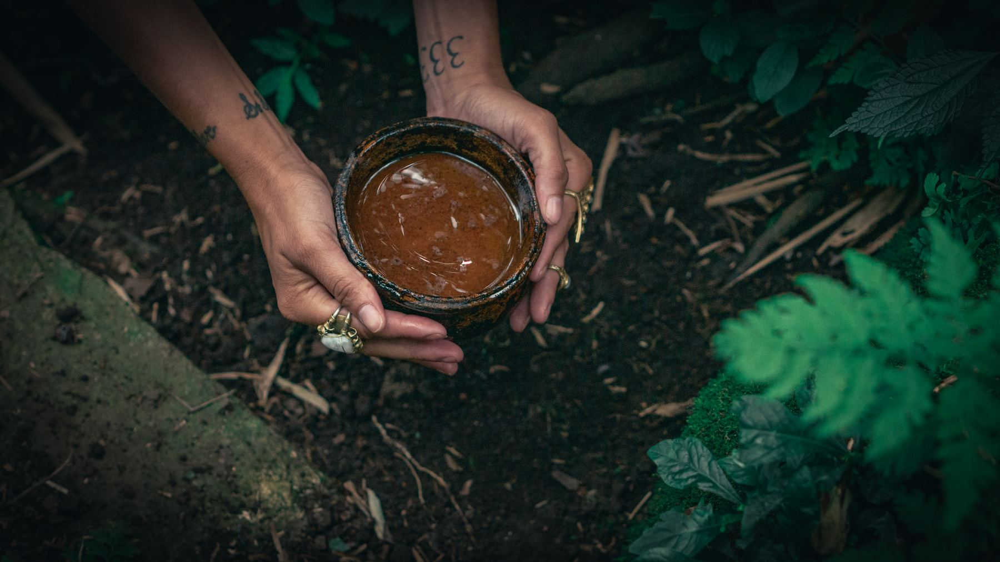
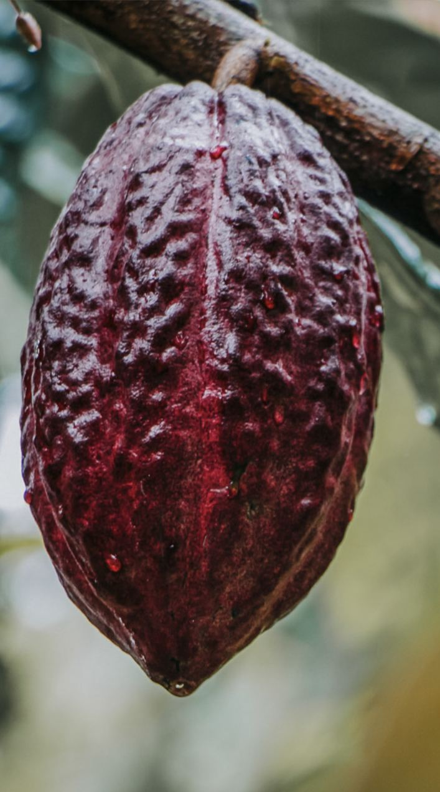
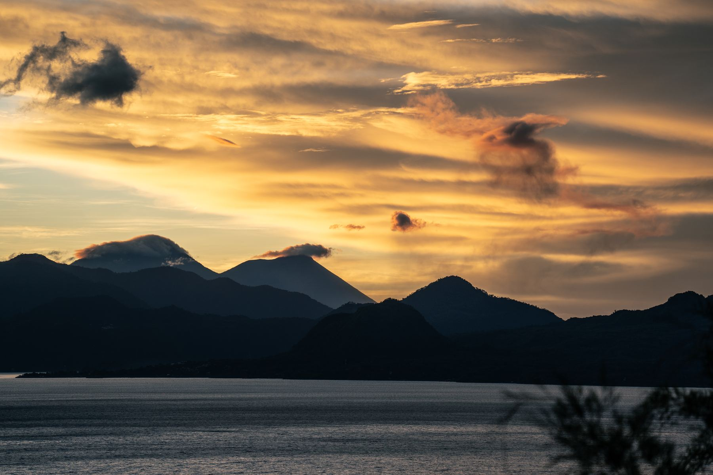

About Us
We partner directly with Mayan families, bringing sun-dried, stone-ground cacao to Europe so you can experience authentic ceremony, ethical sourcing, and the gentle plant spirit that invites more presence, nourishment, and connection into your everyday life.

Origin
Lake Atitlán sits inside the collapsed crater of a volcano that erupted eighty-four thousand years ago, ringed by three younger volcanoes — Atitlán, Tolimán, San Pedro. Our groves grow beyond them, in the volcanic highlands behind these volcanoes rather than at the water's edge, where the soil is mineral-dense, iron-rich, still remembering the fire that made it.
Cacao has grown in this region since long before it had a border on a map. The Tz'utujil and Kaqchikel Maya who farm these highlands are not suppliers to us — they are the reason this cacao exists at all. We grow nothing here that they did not teach us.





The Craft
Every pod is cut by hand, at the moment it's ready — not the moment a shipping schedule demands. The beans are fermented under banana leaves, sun-dried on open patios, then stone-ground into paste using the same technique used here for generations. Nothing is added. Nothing is taken away.
No alkalizing. No conching. No emulsifiers to make it melt like candy. What you get is exactly what came off the tree — full-fat, whole-bean, unmistakably alive.

Who Grows It
We buy directly from the Mayan farming families who tend these groves — paying well above commodity cacao prices, in person, every harvest. No brokers. No anonymous co-ops. No middlemen deciding what a farmer's work is worth.
Byron, pictured here, is one of the farmers we work with directly — his family has grown cacao on this land for generations.
We know the families who grow our cacao by name, and we pay them directly — a fair, agreed price paid every season, not whatever the commodity market allows.
Our groves are farmed the way this land has always been farmed — no synthetic pesticides, no chemical fertilizers, no shortcuts that trade the soil's future for this year's yield.
Ceremonial cacao isn't a wellness fad to us. It's a living Mayan practice we were welcomed into, and one we work every day to honor rather than exploit.